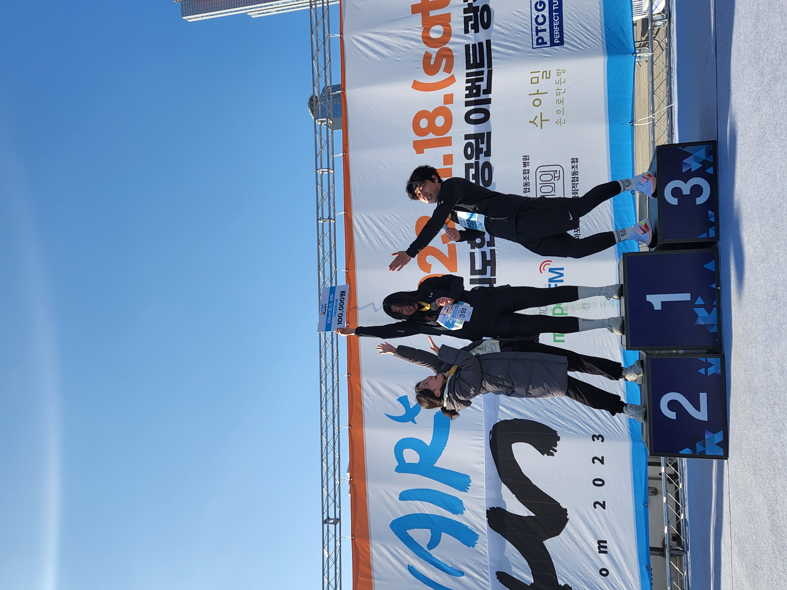
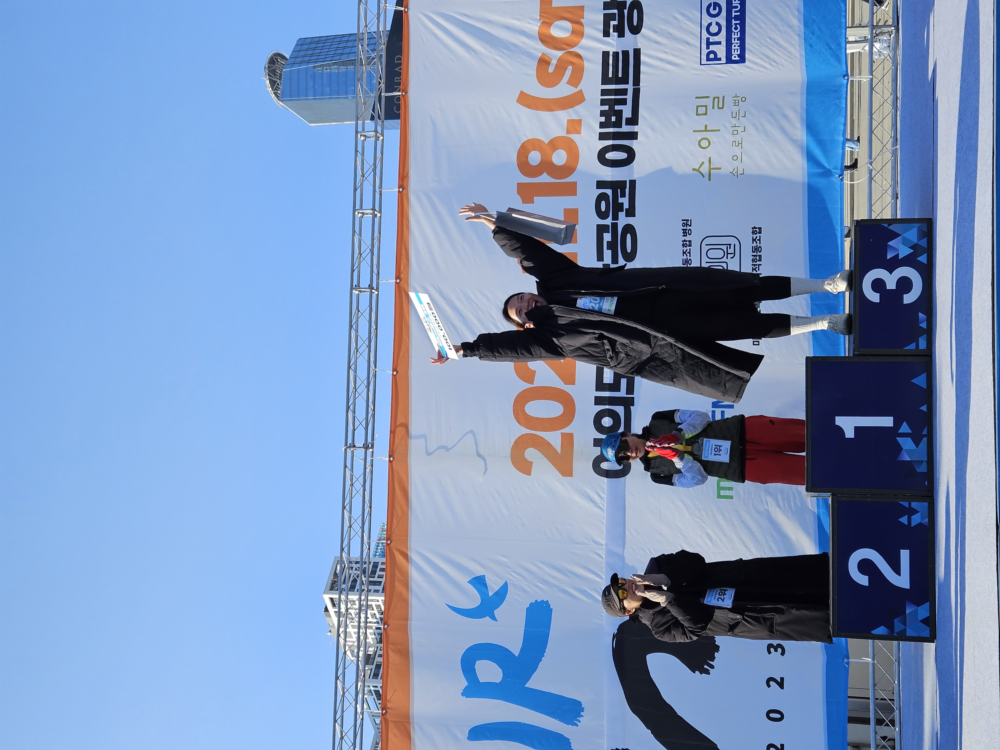

드디어!! 10km를 무사 완주, 무려 3위에 입상하게 됬습니다.ㅎㅎ 정말 좋았습니다..아마 제가 1위 하신 분보다 행복해하지 않았을까 싶습니다. 10km를 뛰는 내내 제 뒤에서 부지런히 따라와주시던 회원님 덕분에 페이스 잃지않고 잘 뛸 수 있었습니다. 그 회원님께선 막판 스퍼트로 저보다 5초 더 빨리 완주하셨습니다. 남녀 따로 시상이라 입상은 못하셨지만 너무 큰 발전을 이루신 분이라 동호회 호스트로서도 너무 감사하고 마라톤 메이트로서도 정말 감사했습니다.
 제가 마음 속 깊이 입상을 노리고 있던 터라 뛰면서도 여자 러너들을 유심히 봤습니다ㅋㅋㅋ 저는 아직 반환점이 보이지도 않는데 남자 선두분들과 같이 돌아오시는 여자러너 두 분은 쫓아갈 엄두가 안났고요.. 그 후로는 여자분들이 보이지 않아 '설마 나3등?..' 이러면서 반환점을 돌았습니다. 그렇게 저를 앞지르는 여자 분들을 보지 못하고 완주를 했습니다. 보통 입상자들은 시상을 위해 미리 앞으로 모이라고 번호를 불러줍니다. 티는 안냈지만 완주하신 회원님이랑 이야기를 나누며 귀는 거의 사회자 마이크에 .. 근데 스릴있게 1,2위는 확정인데 3위가 번호 재확인이 필요해서 딜레이가 됬고, 확인이 끝난 후 다시 발표하는데 이번엔 번호를 뒤집어서 부르고 또, 제 이름은 강설현인데 강서현?김서현?이라고 하길래 소리지르면서 "꺄!!! 강설현이요!!! 강설현!!!" 하면서 시상대로 뛰어갔답니다.ㅋㅋㅋㅋ
그렇게 행복한 마라톤 대회 첫 입상을 하게 되었고 제 이름으로 상금이 기부가 되어 제게는 더욱 의미있었습니다. 시상이 끝나고 부상투혼에도 불구하고 자신만의 페이스로 완주해주신 회원님까지 모두 모여 사진도 찍고 서로 축하해주었습니다.
영하에 칼바람이라 날도 진짜 추웠는데 새벽부터 일어나서 준비하고 대기하고, 뛰느라 피곤하고 배고프고.. 따뜻한 곱창전골과 곱창구이에 점심부터 소주를 마셨네요. 이걸 맛있게 먹으려고 마라톤을 했나 싶을 정도로 맛있고 행복했습니다. 내년 마라톤 시즌이 되면 체중감량까지 성공해서 조금 더 큰 대회에서 입상해보고싶습니다.
우연히 과제를 통해 마라톤 준비과정과 그때의 심정을 곱씹어서 글로 써보니.. 전 'Fun'런은 못 하겠습니다. 기록에 연연해서 매 대회 때마다 입상하고 싶습니다!!!